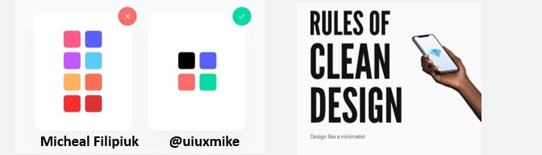

Website elements are arranged ascertain way: the images, texts, and links. The organization of these elements are required if the developer wants the proper message to be sent.
One way to arrange text in a website is taking advantage of the different font elements, mainly font style and font size, and font decoration.
There are many different fonts, each with defining features. The distinguishment can be categorized by font styles. Each style portrays a theme - like sans-serif being very plain and technical, serif being semi-formal, and cursive script being elegant.
Font size, when paired with font style, can portray emphasis. The bigger the size, the more it draws the reader's eyes. It is also a technique used in newspaper layouts. The headline is the biggest font, and usually contains the main idea of the article. It can be a standalone portrayer of information yet entice viewers to read the rest of the article.
Font size can also portray emphasis, but what if you want to distinguish text that is within the article? The header would naturally be bigger, and it would look weird if the inline text is bigger than the rest of the text. That is why font decoration exists. You can underline, bolden, italicize text to further emphasize main points.
Whitespace is the unoccupied part of a page. It surprisingly draws the reader's attention to the rest of the elements, plus grouping them. I appreciate whitespace more due to mobile UI. They make use of whitespace to focus more on visuals and iconography.
Color is abstract to me. It can portray emotion and direction through gradience. Even when learning about color theory, I don't understand color's alluring properties. I just look at a color and think it looks nice.
When combining color to make a scheme, I find it funny when I adjust the original color to the point that it doesn't look like it was ever edited.
I used different fonts for different sections of the article. I did not initially want to include cursive because it is hard to read. When I needed a distinguished font, that was the only time I considered using cursive.
I like the serif font a lot, but it does not look nice for heavy content. I've seen similar font styles for typewriter print and case reports, so maybe it depends on the profession. I had trouble filling up the whitespace and ended up using different containers as borders of borders of text. Quite redundant, but it provides enough contrast between the content and the background.
Color was the hardest element for me to use. No color pallets online had my complete vision. I associated the sections with a strict certain color, so accents were limited to a shade or hue. In the end I did make a mesmerizing website because the colors pop.
[1] https://visualhierarchy.co/blog/
[2] https://www.facebook.com/fullstackhq/photos/a.1454427268201074/2540595596250897
[3] https://www.facebook.com/fullstackhq/photos/a.1454427268201074/2540595662917557
[4] https://www.vecteezy.com/vector-art/112452-free-color-swatches-vector-graphic-3
https://www.behance.net/gallery/95227031/VISUAL-INFORMATION-DESIGN
This website was developed as a major requirement for User Interface and User Experience Design and Programming (USERDES). This website falls under the protection of Creative Commons. If you wish to use the original content in this website for your own purposes, credit the website developer.